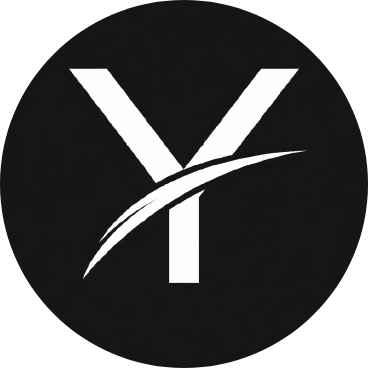

yaans-coat
--:--:--
about me
hiya! i'm yaans-coat, but you can call me yaans. i'm a 13 year old fullstack vibe coder. my main projects are around internet cencorship bypassing tools and some other random things.
my current project is anaria, i'm working on updates and webports most of the time, or you can find me playing games, playing footy, going on walks or watching movies and anime.
how i made anaria
it started when i graduated from primary. i wanted to do something in highschool but for my first year i was too busy with school and didn't have a lot of freetime. in 2026, around march i decided i wanted to make one of those sites like waves, velara, cherri, truffled, etc. so, i started work on it. i started making my first ubg site on march 26th, 2026, i took inspiration from waves and i called mine blackwaves. when i told people at my school that i was making a gaming site that was also a proxy they cheered for me and praised me, which lasted only like one week. i worked for days and days on blackwaves but i couldn't finish it, sometimes the ai that i used to vibecode just gave up on me.
i tried making a different one called taca, which also didn't work, but i revived it! taca was meant to be a proxy with very limited feautures. no games, no multiple tabs, just one single proxy that could search the web with one tab.
i deleted my github account and made it again cause of stupid 2fa... and then i started working on blackwaves one last time but i just had the same issues. i plan on reviving it after i maybe give anaria to someone else and finish what i started but ehh idk...
now, the final ubg... anaria! i made this in the respect for blackwaves because that was just a forgotten project that i wanted to revive but i didn't like the name blackwaves, it wasn't even original. it was now that i learned things like webporting games, gmshelf, developers like x8rr, bog, crllect, gayq, etc. i found out how to porperly vibecode with opencode, and that's gotten me to where i am today.
contact me
- emailyawning.yaans@gmail.com
- githubyaans-coat
- discordyaans.coat